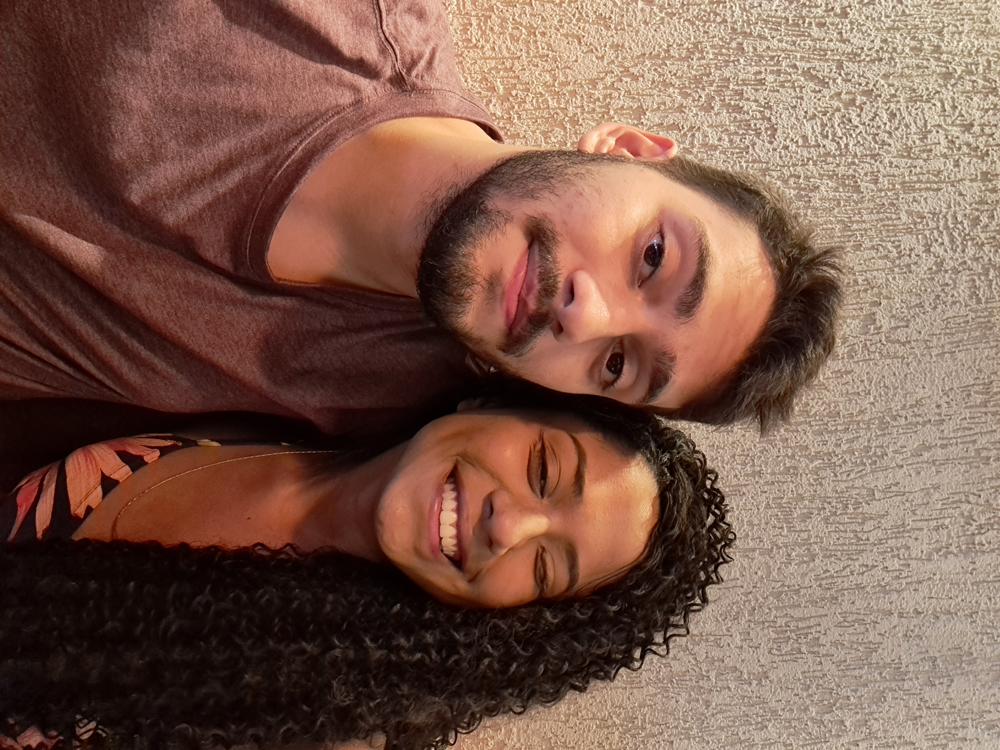
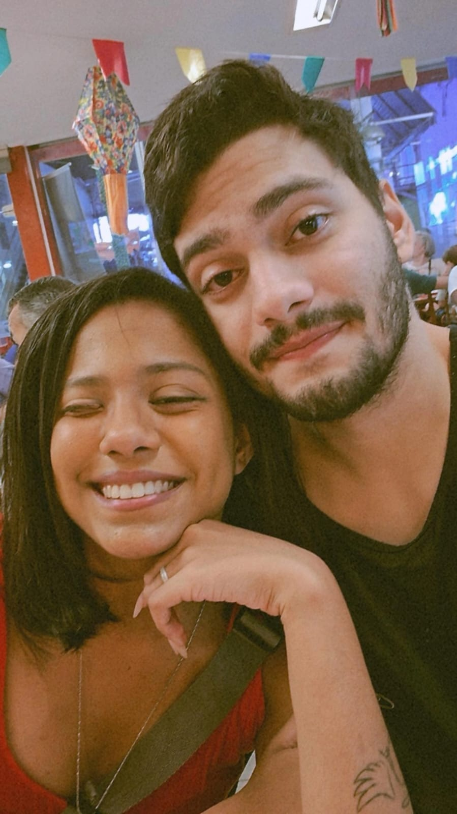
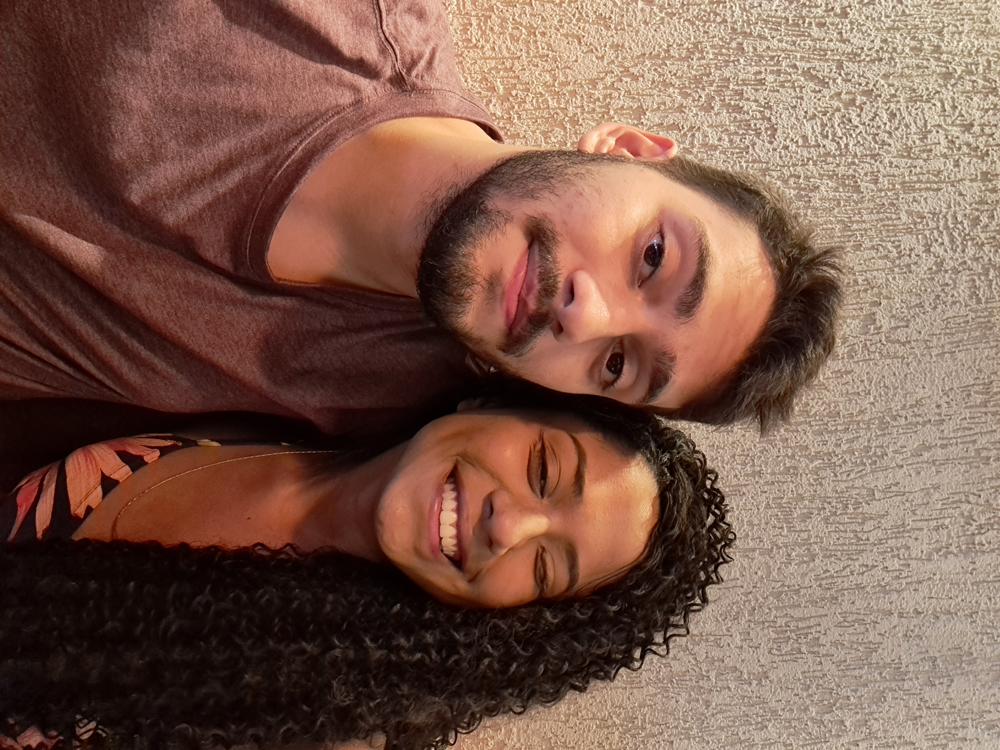
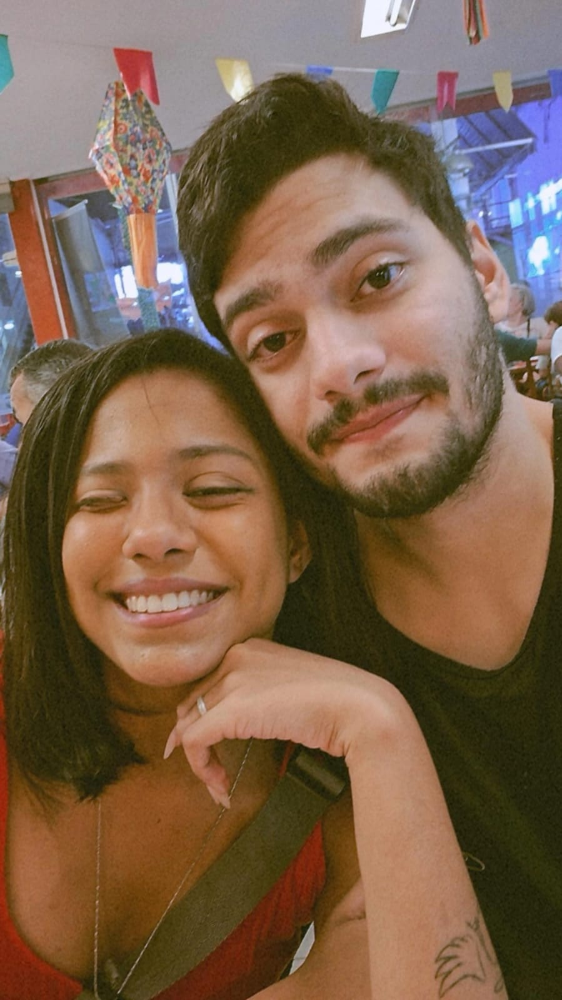
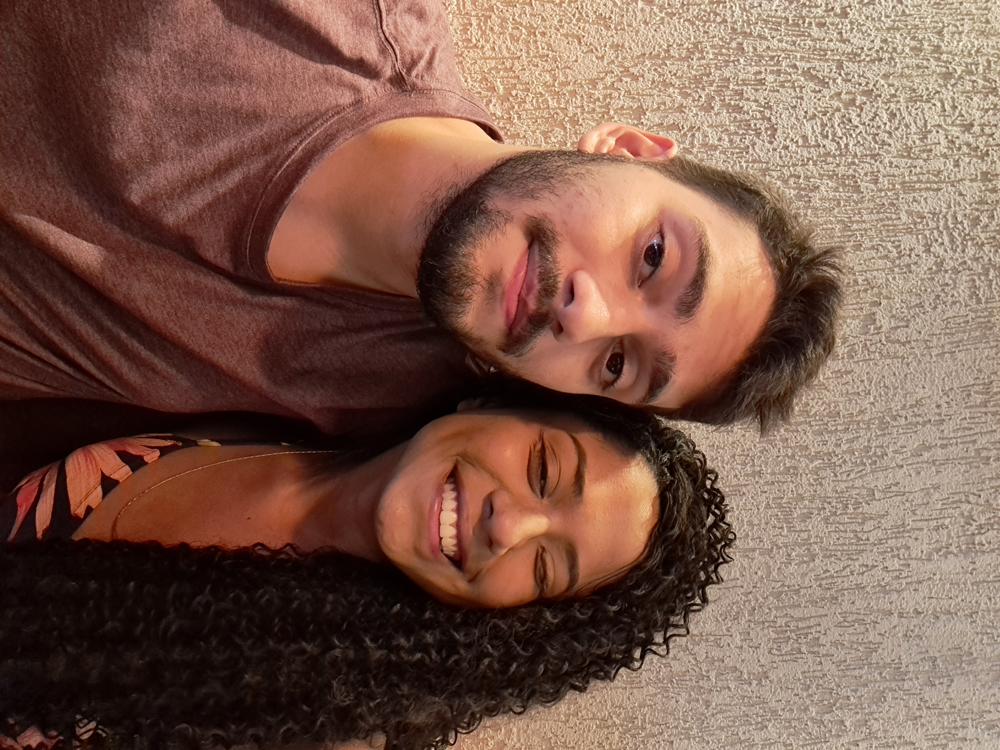
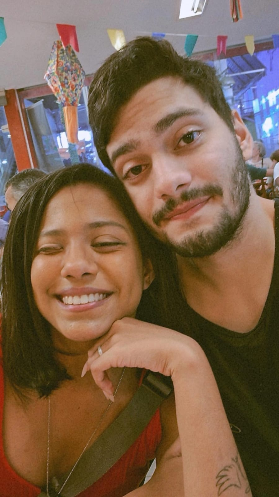
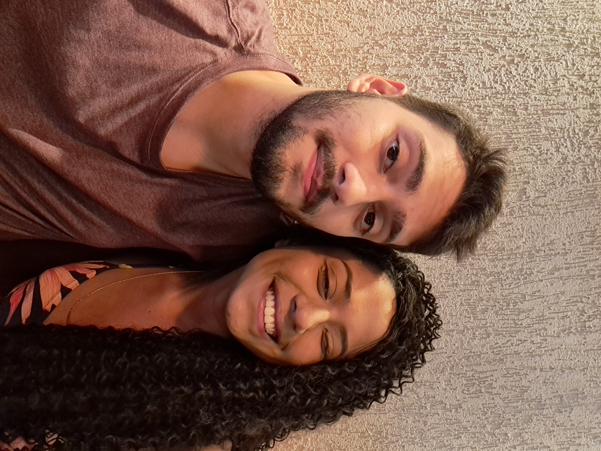
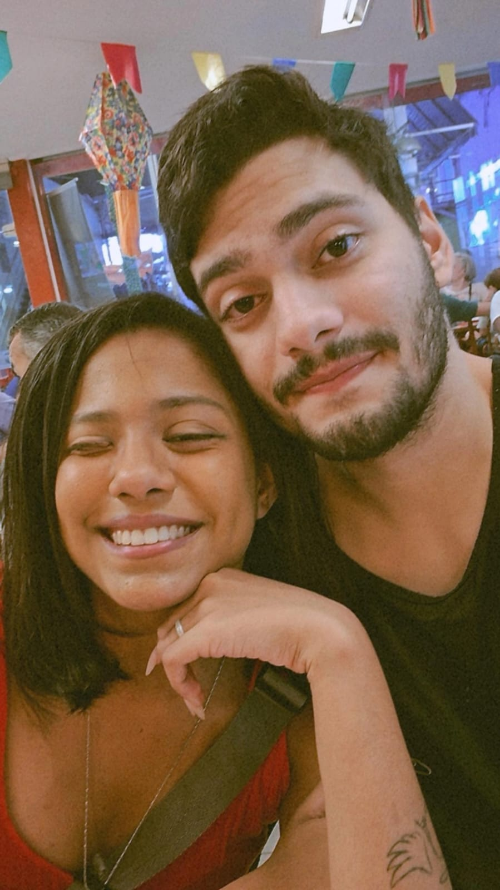

De novo, eu aqui escrevendo essa pequena carta digital (com um pouco mais de frufu). Sei que não é um dia comum e nem um dia que você espere receber algo assim, mas queria
tornar esse momento especial e recriar novas memórias com você em todas as datas comemorativas e pensei em começar com essa...
Aqui eu pensei em um recomeço confortável e cada um dos presentes que pode ver é algo que já vi ou reparei que você pensava em ter. Então espero que durma abraçada nesse travesseiro engraçado, que pinte as mandalas desse pequeno livo e no final utilize essas canetas para pintar lindos estilos nesse mundo tão louco e doce
Quero dizer a você que esse dia 12/06/2025 está sendo mais um dia incrÃvel desse ano muito mais belo e mais gostoso de estar ao seu lado. Amo o fato de te ver sorrir mais e ser teu parceiro para qualquer coisa, amo ouvir sua gargalhada expressiva e sua impaciência notável. Amo conhecer cada parte de sua vida e mais que isso, amo estar com você e ao seu lado. um grande Feliz Dia Dos Namorados para nós! ❤️
Com Amor, seu eterno Carlos. ❤️